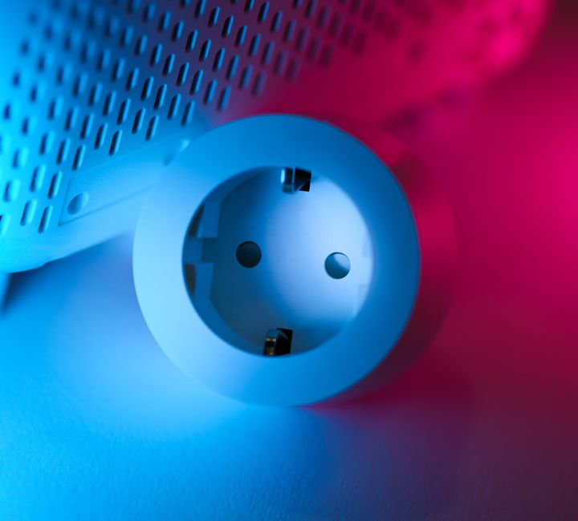
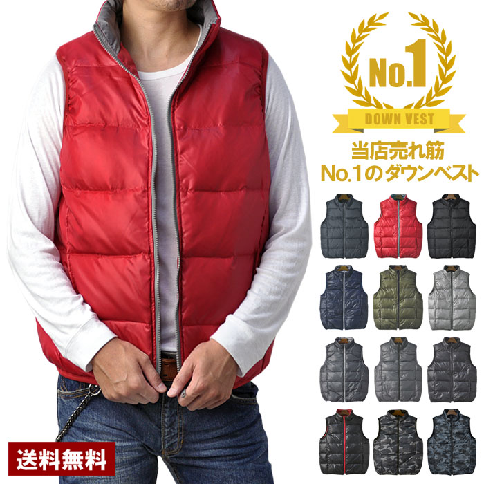
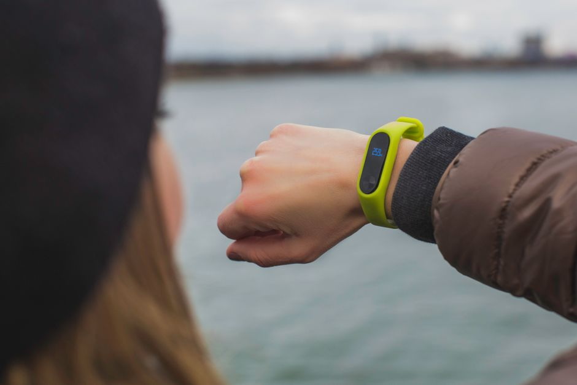
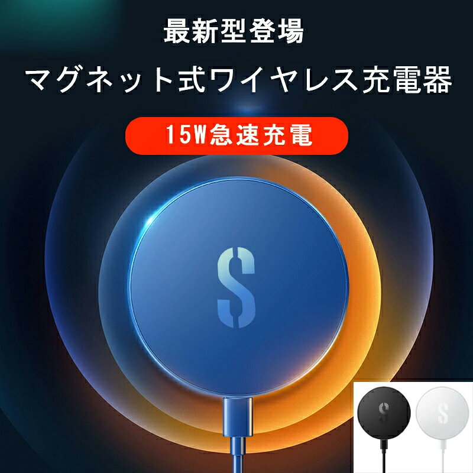
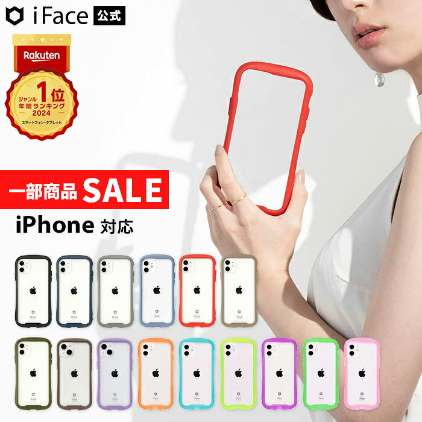
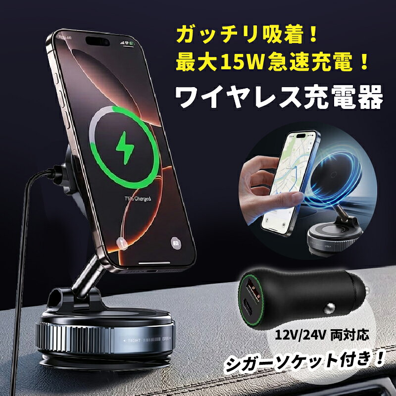
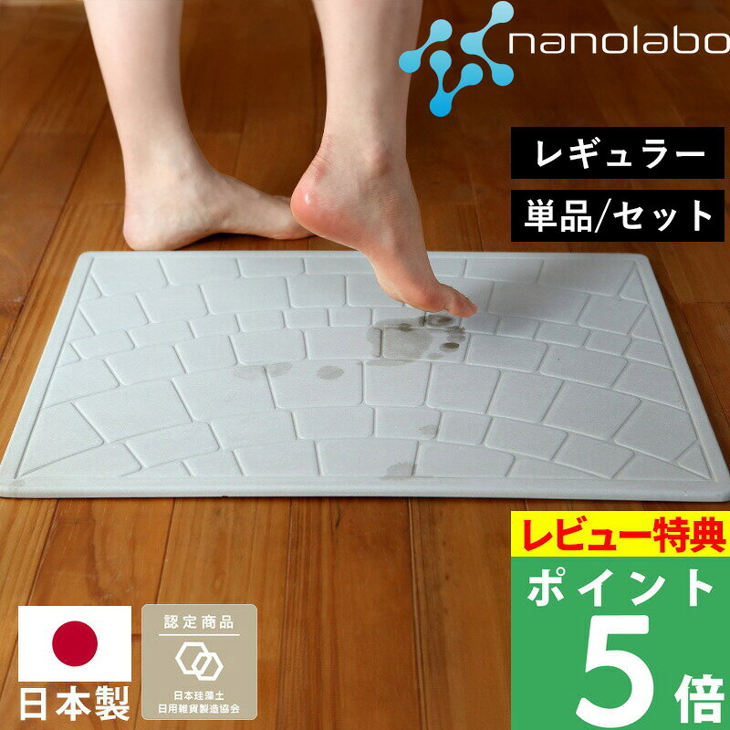

暮らしと、ちょっといいもの。
実際のレビューをもとに、暮らしを少し良くするアイテムと知恵をお届けします。

海外製充電器のPSEマークの見方と確認ポイント
海外製の充電器・ACアダプターを使う前に知っておきたいPSEマークの見方を解説。菱形と丸形の違い、特定電気用品としての扱い、個人輸入時の注意点を整理します。
2026-11-26
-
 Apple最新情報
Apple最新情報
iOS 26.2まとめ｜既存iPhoneユーザーに関係する変更点
iOS 26.2で追加されたデフォルトブラウザ選択やロック画面調整、セキュリティ更新など、すでにiPhoneを使っている人に関係がある変更点を整理して紹介します。
2026-11-26
-

便利家電・最新家電スマートプラグとスマートリモコンで始めるスマート家電入門
スマート家電を始めたい方向けに、スマートプラグとスマートリモコンの違いや選び方のポイントを、Matter規格や代表的な製品の特徴を踏まえて整理して紹介します。
2026-11-25
-

メンズファッション ・ PRダウンベストおすすめ3選|レビューと素材で比較
メンズ向けダウンベストを価格・レビュー評価・素材の観点から比較。カラーファスナー付きの定番モデル、男女兼用で着回しやすい中綿ベスト、上質なホワイトダウンを使ったブランドベストの3点を紹介し、自分に合う1着を選ぶ際のポイントをまとめました。
2026-11-25
-
 ガジェット
ガジェット
イヤホンの寿命を延ばす掃除と充電ケースの保管術
ワイヤレスイヤホンを長く使うために役立つ、イヤーピースや本体の掃除方法、充電ケースの保管のコツ、バッテリーをいたわる充電の仕方を調べた内容に基づいて紹介します。
2026-11-24
-
生活雑貨
冬の部屋の結露・カビ対策|湿度50%台を保つ換気の基本
カビは湿度60%を超えると活発になるといわれています。結露が増える季節に向けて、湿度管理・換気・水回りの手入れ・収納スペースのケアなど、部屋のカビを防ぐための基本的な考え方を整理しました。
2026-11-24
-
 キッチン
キッチン
重曹とクエン酸で防ぐキッチンのニオイ・カビ対策法
キッチンのニオイやカビの原因を、生ゴミ・湿気・換気不足の観点から整理し、重曹とクエン酸の使い分けや換気・収納の工夫など、日常でできる対策方法を紹介します。
2026-11-23
-

Huawei・中華ガジェット中華スマホの技適マーク確認方法と使用時の注意点
中華スマホやガジェットを購入する前に知っておきたい技適マークの確認方法、技適マークがない機器を使った場合の罰則、90日・180日ルールなどの特例制度について、総務省等の公開情報をもとに解説します。
2026-11-23
-

Apple最新情報 ・ PRMagSafe充電器おすすめ3選と選び方を比較
MagSafe対応の充電器・モバイルバッテリー3点を価格・安全機能・対応機種の広さ・レビュー評価の観点から比較。据え置き型とバッテリー一体型の違いも整理し、自分に合うMagSafe充電器を選ぶときのポイントをまとめました。
2026-11-22
-
 便利家電・最新家電 ・ PR
便利家電・最新家電 ・ PR
ふとんクリーナーおすすめ3選 吸引力と機能で比較
ふとんクリーナーのおすすめ3点を、吸引力やダニ対策機能、価格とレビュー評価の違いで比較しました。ランキング実績や振動吸引、ダニ除去率など仕様別に選び方のポイントを紹介します。
2026-11-22
-
 メンズファッション
メンズファッション
寒暖差に強いメンズコーデ|羽織りで体温調節するコツ
朝晩と日中の気温差が大きい季節の変わり目に役立つ、メンズの羽織り・重ね着の考え方を紹介。3層構造の重ね着や丈感・色のバランスの整え方をです・ます調で解説します。
2026-11-21
-
 ガジェット ・ PR
ガジェット ・ PR
スマホスタンドおすすめ3選!タイプ別の選び方比較ガイド
スマホスタンドのおすすめ3選を、高さ調整のしやすさ・対応デバイス・固定方法の違いで比較しました。三脚タイプ、スマホ・タブレット対応タイプ、車内で使える吸着マグネットタイプの特徴をまとめて紹介します。選び方の参考にしてください。
2026-11-21
-
 生活雑貨 ・ PR
生活雑貨 ・ PR
突っ張り棒おすすめ3選の比較|長さ・素材・用途で選ぶ
突っ張り棒を選ぶときに注目したい伸縮範囲・素材・設置場所の違いを、実際の商品データをもとに3点比較しました。室内用から屋外のベランダ物干しまで、用途別の選び方がわかります。
2026-11-20
-
 キッチン ・ PR
キッチン ・ PR
調味料ボトルおすすめ3選と選び方比較ガイド
調味料ボトルを選ぶときに注目したい容量・サイズ展開、開け方の使いやすさ、材質の違いという3つのポイントから、人気の3種類を比べて紹介します。
2026-11-20
-
 Huawei・中華ガジェット
Huawei・中華ガジェット
Huawei最新スマートウォッチの健康機能と購入前の注意点
HUAWEI WATCH GT 6 Proなど最新スマートウォッチの健康管理機能と、日本で使う際の決済・認証に関する注意点を、公開情報をもとに整理しました。
2026-11-19
-
 Apple最新情報 ・ PR
Apple最新情報 ・ PR
ガラスフィルムおすすめ3選｜iPhone向け比較ガイド
iPhone用ガラスフィルムを選ぶときに見ておきたい硬度・セット内容・レビュー評価の観点から、3つの商品を比較しながら紹介します。
2026-11-19
-
 便利家電・最新家電 ・ PR
便利家電・最新家電 ・ PR
布団乾燥機のおすすめ3選と選び方比較ガイド
布団乾燥機を選ぶときに注目したい価格・レビュー評価・タイマーの細かさ・対応できる布団やくつの数を基準に、3つのモデルを比較しました。ダニ対策や複数人分の乾燥など、用途に合わせた選び方の参考にしてください。
2026-11-18
-
 メンズファッション
メンズファッション
体型カバーに効くメンズ服選び|首元・柄・サイズ感のコツ
体型が気になる方向けに、サイズ感・色・首元のネックライン・柄の選び方という4つの視点から、着こなしで印象を整える工夫を解説します。
2026-11-18
-
 ガジェット
ガジェット
スマホの電池が減るのが早い方へ バッテリー節約術まとめ
画面の明るさや充電の仕方、位置情報の設定など、日常のちょっとした見直しでスマホのバッテリー消耗を抑える方法を根拠とともに紹介します。
2026-11-17
-
 生活雑貨
生活雑貨
洗濯物を5時間以内に乾かす一人暮らしの部屋干し術
一人暮らしの部屋干しで生乾き臭が気になる方へ。原因となるモラクセラ菌の特徴と、干す場所・干し方・洗濯時の工夫、家電の活用まで、乾く時間を短くするためのポイントをまとめました。
2026-11-17
-
 キッチン ・ PR
キッチン ・ PR
水切りラックのおすすめ3選と選び方｜設置場所で選ぶコツ
水切りラックを選ぶ際のポイントを比較しながら解説。ボトル向けのワイドタイプ、省スペースな吸着タイプ、耐荷重に優れたステンレスタイプの3つのおすすめ商品の特徴を紹介します。
2026-11-16
-
 Huawei・中華ガジェット ・ PR
Huawei・中華ガジェット ・ PR
スマートバンドおすすめ3選と選び方を比較
スマートバンドを選ぶときに注目したい本体の機能・バッテリー持ち、交換ベルトの対応機種、カラー展開を、実際の商品データをもとに比較しながら紹介します。
2026-11-16
-

Apple最新情報 ・ PRiPhoneケース比較｜人気3選のレビュー評価と選び方
iPhoneケースのおすすめ3選を、レビュー評価や保護スタイルの違いから比較。クリアタイプやマグネット式フルカバーなど、選び方のポイントも紹介します。
2026-11-15
-
 便利家電・最新家電
便利家電・最新家電
家電の買い替えどきを判断する目安と正しい処分方法
冷蔵庫・洗濯機・エアコンの買い替えどきを使用年数や部品保有期間から判断する考え方と、家電リサイクル法に基づく正しい処分方法、無許可業者への注意点をまとめました。
2026-11-15
-
 メンズファッション ・ PR
メンズファッション ・ PR
ダウンジャケットおすすめ3選|暖かさ・軽さ・防寒力で比較
メンズのダウンジャケットを探している方へ、フードの着脱可否やダウンの配合率、レビューの評価・件数から3つの商品を比較しました。防寒力や軽さを重視する人向けの選び方のポイントも紹介します。
2026-11-14
-

ガジェット ・ PR車載スマホホルダーおすすめ3選と選び方を比較
車載スマホホルダーのおすすめ3選を、固定方式・ワイヤレス充電・角度調整のしやすさという観点から商品データをもとに比較しました。二重固定で充電もできるタイプ、伸縮アームで角度調整しやすい吸盤タイプ、マグネット併用の真空吸着タイプの特徴を紹介しています。
2026-11-14
-

生活雑貨 ・ PR珪藻土バスマットおすすめ3選と選び方|価格・評価で比較
珪藻土バスマットを価格・レビュー評価件数・薄さや吸水性といった観点から3点比較し、選び方のポイントをまとめました。
2026-11-13
-
 キッチン
キッチン
野菜室で野菜がしなびない包み方と立てる向きのコツ
野菜室で野菜を長持ちさせるための、新聞紙やキッチンペーパーを使った包み方、育った向きで立てて保存するコツ、エチレンガスを出す野菜との置き方の工夫をまとめて紹介します。
2026-11-13
-
 Huawei・中華ガジェット ・ PR
Huawei・中華ガジェット ・ PR
スマートウォッチのおすすめ3選と選び方を比較
スマートウォッチを選ぶときに注目したい画面サイズ・バッテリー・通話機能・健康管理機能の違いを、実際の商品データをもとに3機種で比較しながら紹介します。
2026-11-12
-
 Apple最新情報
Apple最新情報
古いiPhone・iPadを下取り・売却前にやること完全ガイド
古いiPhoneやiPadを下取り・売却に出す前に行うべきバックアップ、Bluetooth解除、初期化、Apple ID削除などの準備手順を順番に解説します。
2026-11-12